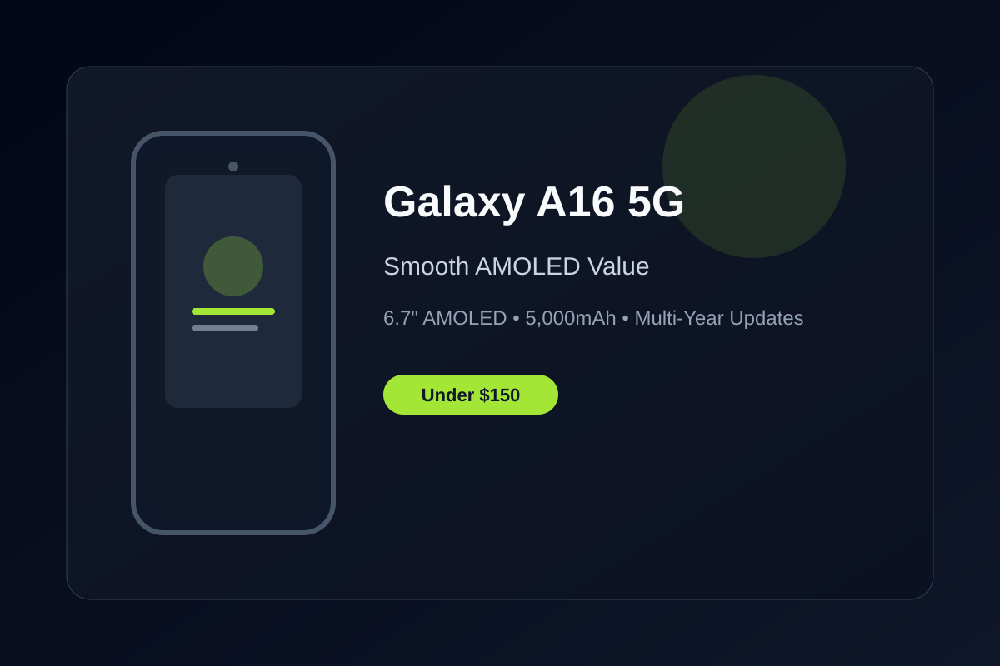

Samsung Galaxy A16 5G Review: Smooth AMOLED and Solid Value Under $150
The Galaxy A16 5G brings a bright 6.7-inch AMOLED display, dependable all-day battery, and years of software support to the budget segment.
In a market where many sub-$150 phones still rely on LCD panels and short update cycles, the Samsung Galaxy A16 5G stands out with its 6.7-inch Super AMOLED display. The 90Hz panel is bright, colorful, and smooth enough for everyday scrolling and video, making the phone feel more refined than its price suggests.
Battery life is another practical strength. The 5,000mAh cell regularly delivers a full day of mixed use and often stretches into the next morning with moderate screen time. Combined with efficient power management, it is a reliable daily driver for commuting, streaming, and light multitasking without constant charging anxiety.
Samsung’s software commitment is a quiet but important advantage. The A16 5G ships with a clean-enough One UI experience and is expected to receive multiple years of OS and security updates, which is uncommon at this price. That longevity helps the phone stay relevant longer than many competitors that freeze after one or two updates.
Performance handles everyday tasks comfortably. App switching, messaging, browsing, and media playback stay responsive, while the 50MP main camera produces usable daylight shots for social media and casual photography. It is not a flagship camera system, but it is consistent and straightforward for the price.
If you want an unlocked Android phone that prioritizes a pleasant display, dependable battery life, and longer software support without stretching past $150, the Galaxy A16 5G is one of the more balanced options available right now.
Key Takeaways
- Price Range: ~$130 – $150 (Amazon Unlocked / Renewed)
- Display: 6.7-inch Super AMOLED, 90Hz, bright and colorful
- Battery: 5,000mAh with reliable all-day endurance
- Software: Multi-year OS and security update support